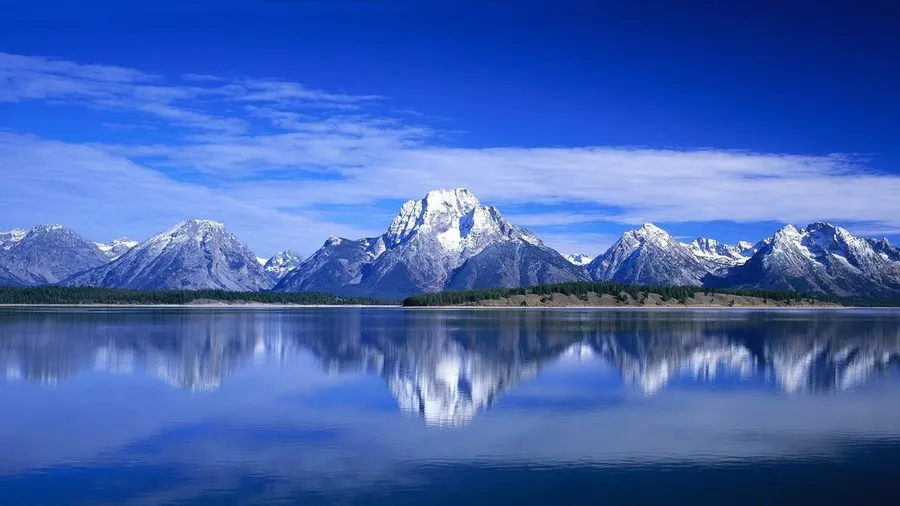

Notícia Principal
A Islândia é um país insular localizado no norte do Oceano Atlântico, conhecido por suas paisagens de vulcões, geleiras, cachoeiras e gêiseres. Sua capital é Reykjavik, e o país se destaca pela alta qualidade de vida, pelo uso de energia geotérmica e pela forte preservação da natureza.
Leia a matéria completa